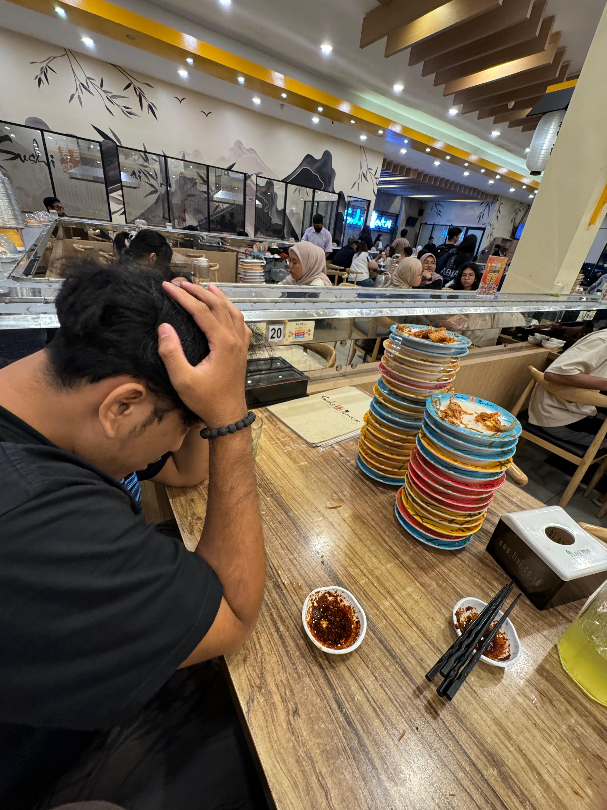

Contact
📍 Tanjung Priok, Jakarta Utara
Social Media
Skills
- ● Analisis Mata Uang Crypto
- ● Pedagang Crypto
- ● Kriptografi
Soft Skills
- ● Antusias dan menghargai sesama
- ● Cepat beradaptasi dalam tim
- ● Mampu bekerja sama
MUHAMMAD BRYAN RAMDANI
Profile
Saya adalah mahasiswa Sistem Informasi di Telkom University Kampus Jakarta dengan latar belakang Teknik Komputer dan Jaringan. Ia memiliki keahlian dalam analisis dan perdagangan kripto serta kriptografi. Berpengalaman di PT. Lintas Jaringan Nusantara dan PT. Pelindo, memahami dunia industri dan teknologi. Aktif sebagai Humas HMSI dan anggota Kyoukushinkaikan Karate Klub Cibinong sejak 2017, Saya mengedepankan adaptasi, kerja tim, dan profesionalisme dalam setiap tantangan.
Education
- 2018 - 2020 MTSN 1 Kota Dumai
- 2020 - 2023 SMKN 2 Kota Dumai - Teknik Komputer dan Jaringan
- 2023 - Sekarang Telkom University Jakarta - Sistem Informasi
Work Experience
- 2022 - PT. Lintas Jaringan Nusantara
- 2022 - PT. Pelindo
Organizational Experience
- 2024 - Sekarang Himsi | Himpunan Mahasiswa Sistem Informasi
- 2017 - Sekarang Kyoukushinkaikan Karate Klub Cibinong